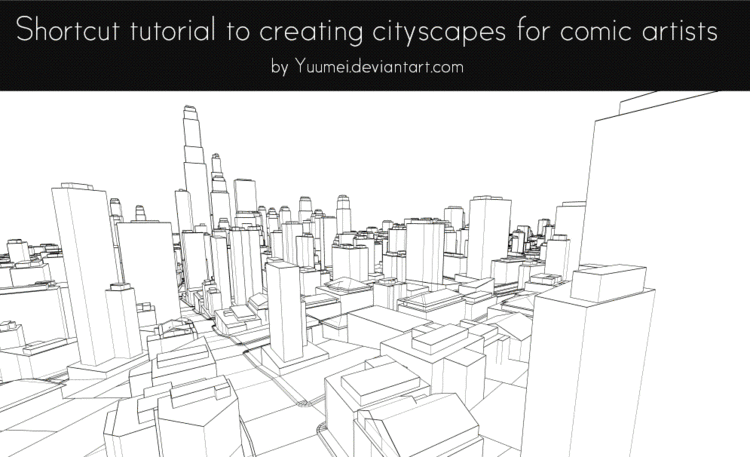
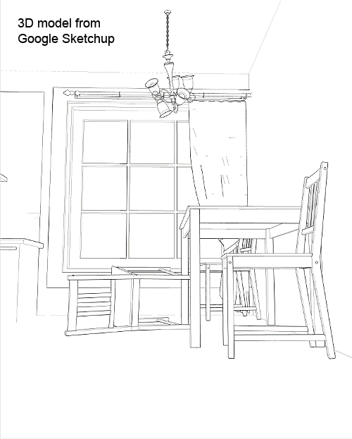

These are some old and outdated tutorial I made in 2012 on how I use 3D models in Sketchup to save time on drawing multiple backgrounds in my comics. I will be making a new tutorial in the future with more tips, shortcuts, and techniques :)

These 2 gifs give a basic overview of how it's done. Scroll down to see a more detailed step by step of the tutorial, plus other links and resources.


Other 3D programs
- Sketchup - Here is the link for downloading a free copy of Sketchup from Google.
- 3DS Max - Fully functional 3D program that can be used for modeling, animation, games, etc. It comes with Mental ray, a fairly good renderer. It's not specifically designed for making buildings, so it's harder to use than Sketchup in that regard, but it has awesome free plugins like the ones listed below. It is not free, but they offer free versions to students in participating schools (usually most colleges) which means as long as you have an e-mail account registered to your school, you can download it for free.
- Ghost Town - A free 3DS Max plugin that will procedurally generate cities within minutes. It is still in development so expect it to have bugs, but it still works well enough for me.
- Building Generator - Another free 3DS MAX plugin. It automatically generates buildings within seconds. These buildings are more detailed and customizable than the ones in Ghost Town, but it only generates one building at a time. Also, it does not generate interior furnishing, only the exterior.
- Blender - 100% free fully functioning 3D program that can be used for character modeling, animation, games, etc. Best used with the plugin below
- Suicidator city generator - a Blender plugin that comes in both free and pro version. It has ups and downs compared to Ghost Town so it's good to check out both and use them both to best fit your needs.
- City Engine - It's a crazy complicated 3D program that generates super realistic and customizable cities. However, it is also crazy expensive and will immediately crash if your computer doesn't have 16-24 gigs of RAM. Not really recommended unless you want to base your entire career on drawing cities.
- CityScape - An amazing and easy to use program that used to come free with 3DS Max but stupid stuff happened and now the program doesn't exist at all; you can't even buy it. However, if you know your google well, and knows the dark corners of the internet, you can still find a student version of it. No link because it technically doesn't exist anymore (or does it? ಠ_ಠ )
- Kerkythea - A free external rendering program capable of photo-realistic results. I just found out about it and haven't used it yet but it sounds pretty cool on top of being free.
- V-ray - a render plugin for 3DS Max, Sketchup, and other 3D programs. It can render realistic and non-photo-realistic images (i.e. cartoon line art), it also has cool fisheye lens and other effects. It renders directly within the 3D program so you don't have to switch to another render program to use it. It is not free ):
Other Drawing programs
- Paint tool SAI - Love this program. Very easy to draw with compared to Photoshop, which is better for editing than drawing. It's also very cheap. Only around $50 when I bought it.
- Corel Painter - Good for mimicing traditional materials such as oil paint and water color. Ideal for adding that extra hand painted feel to 3D images. Not free and not cheap ):
- Photoshop - Everyone has heard of it. Like the name, it's best at editing photos (or 3D images). It's also used by many artists to paint, but I prefer SAI.
Too poor to buy any of these?
Most of us are not rich or just too young and mom said "NO"... well, I'm NOT encouraging this, but a standard rule is: If there is a program, a free cracked version of it exists somewhere on the internet. Usually google is enough to find them, if not, try 3D forums.
Good luck! :D